宮城・東北 / AWS 学生生成AI発表資料にもとづく解説
チャット型医薬品相談ツール
スライド解説＋アーキテクチャ図
発表資料「宮城_柳葉魚.pptx」の各スライドを順に追いながら、課題設定・プロダクト・技術の核心・インフラを解説します。
アーキテクチャ図は発表スライドを参照して再描画したものです。
Slide 1–2
タイトル・体験入口
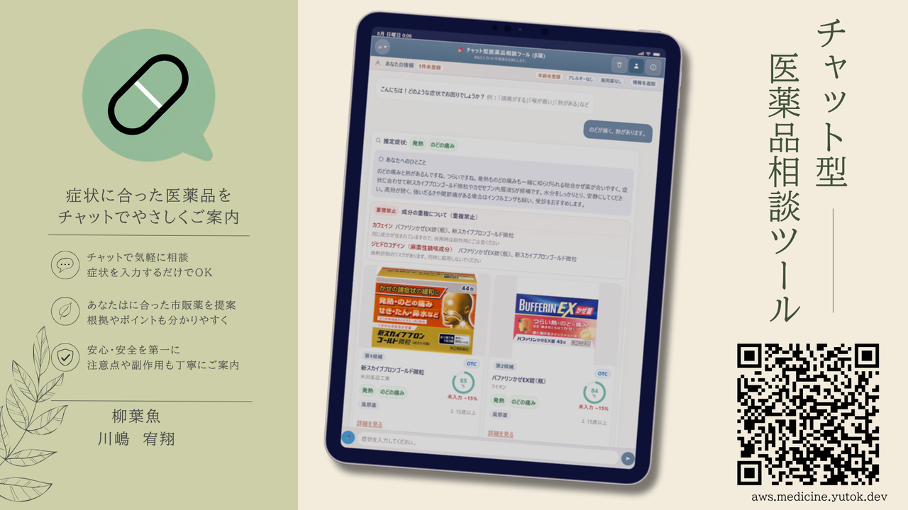
タイトルスライド — タブレットUI上で症状入力→推奨カード提示までの体験を一枚で示す
製品の第一印象は「チャットで症状を伝えるだけで、合った市販薬と注意点が返ってくる」こと。
画面には適合度スコア・禁忌注意・重複成分の警告が同居しており、推奨と安全ガードが同じ体験の中にあることが伝わる構成です。
発表メモ： 冒頭で QR / URL を案内し、聴衆が手元で触れながら聞く設計（Slide 2）。
Slide 3
現場での課題 — なぜこのプロダクトか
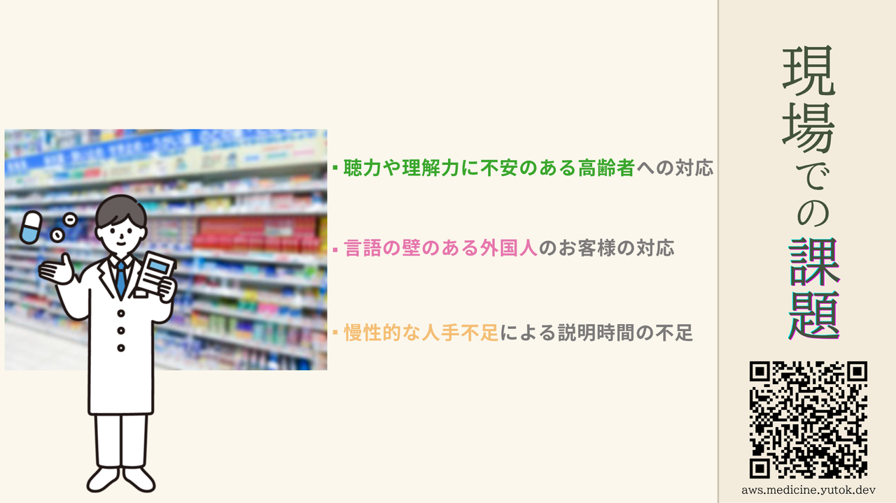
登録販売者として店頭で見た3つの断絶
- 理解の壁 — 聴力・理解力に個人差のある高齢者への口頭説明だけでは届きにくい
- 言語の壁 — 訪日外国人は症状も成分表示も伝え・読めない
- 人手の壁 — 慢性的人手不足で、一人ひとりに十分な説明時間が取れない
応募概要書ではここに「EC化の壁」を加え、4断絶として整理しています。
Slide 4–6
地域課題 → セルフメディケーション → 店舗不足
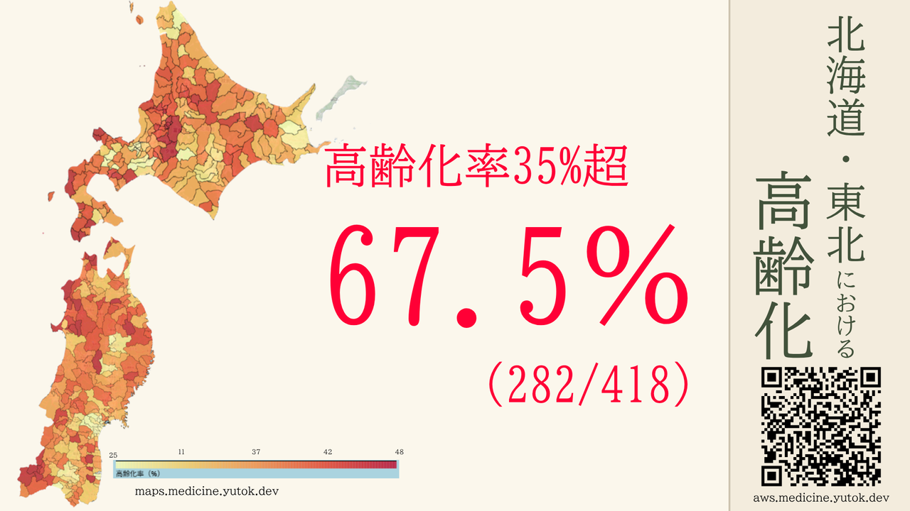
北海道・東北：高齢化率35%超の自治体が過半数 — 医療機関負担軽減が急務
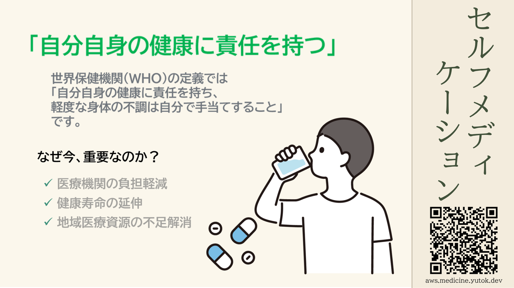
WHO定義に沿ったセルフメディケーション — 軽度不調を自分で手当てする文化の推進
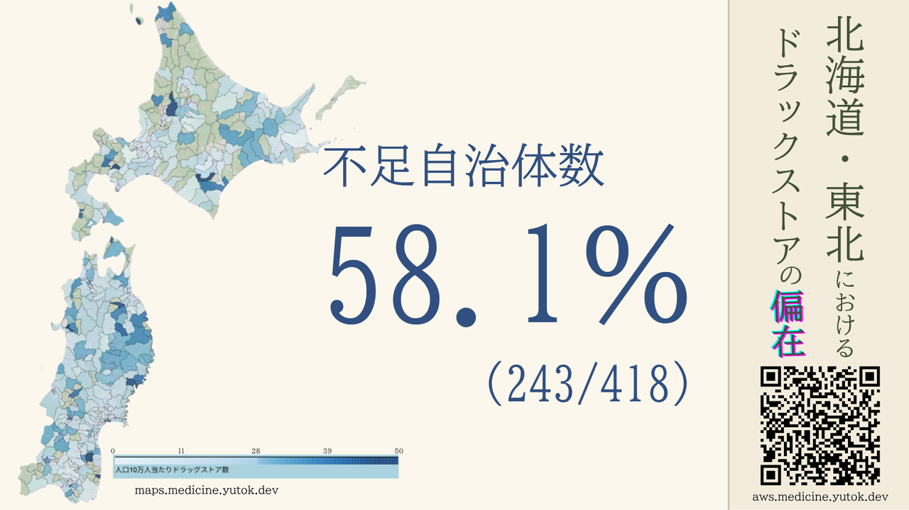
店舗不足が人手不足・混雑と結びつき、相談機会そのものが減る
論理の流れ
高齢化・過疎 → 医療リソース逼迫 → セルフメディケーションが鍵 → しかし相談できる場（店舗・人手）が不足 →
スマホ上の安全な相談チャネルが必要、という物語です。
Slide 7–8
ソリューション：手元のスマホで安心して選ぶ
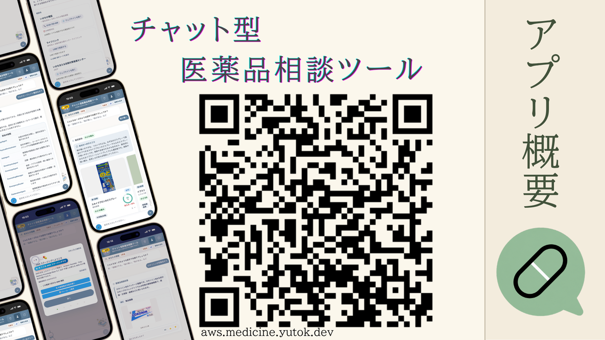
アプリ概要 — Web / モバイルUIとデモURL。人手不足を「直接解決」せず、相談の入口を増やす
- ユーザーに合ったOTCを推奨 → ドラッグストアやECで購入
- 危機時は推奨せず、いのちの電話等へ誘導する導線を持つ
- Slide 8 はデモ動画・実画面（発表本番で操作）
Slide 9
会話の振り分け — マルチエージェント
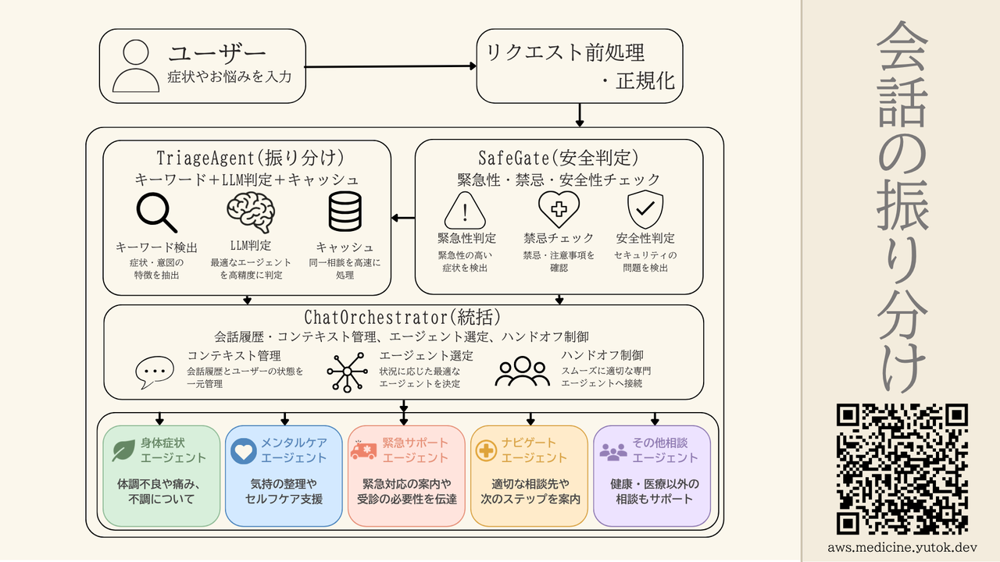
発表スライド原本：SafetyGate × TriageAgent → ChatOrchestrator → 専門エージェント
市販薬相談・メンタル・緊急・店舗案内・その他が同じ入力欄から来るため、
まず安全確認と意図分類を行い、専門エージェントへハンドオフします。
緊急時は推奨フローへ進めず、119・受診案内で止めます。
Slide 10
技術的特徴 — 生成AIに「薬を選ばせない」
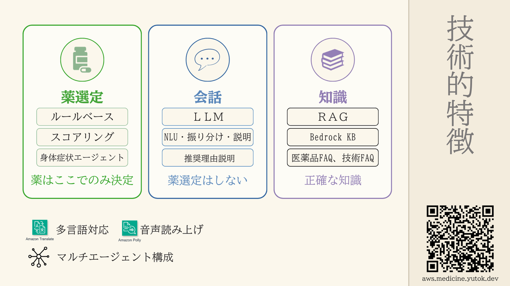
三層の責務分離。薬選定はルール＋スコアリングのみ。LLMは会話と説明。知識はRAG（Bedrock KB）
| 柱 | 担当 | やること / やらないこと |
|---|
| 薬選定 |
ルールベース＋スコアリング |
ここでだけ薬を決める。 禁忌除外後に6要素でランキング。 |
| 会話 |
LLM（NLU・振り分け・説明） |
柔軟な対話と理由の文章化。薬選定はしない。 |
| 知識 |
RAG / Bedrock KB |
医薬品FAQ・技術FAQから根拠付き回答。ハルシネーション抑制。 |
横断機能として Amazon Translate（多言語）・Amazon Polly（音声読み上げ）を利用。
技術的独自性（添付図）
図1〜3 ― 技術的独自性の整理
発表ノート（Slide 9–11）と添付の3図に対応。画像は提出用に差し替え済みです。
図1. 技術的独自性（役割分担） —
薬選定＝ルール＋スコアリングのみ決定／会話＝LLMは選定しない／知識＝Bedrock KBのRAG。
Translate・Pollyで多言語・音声。発表ノート：「薬はここだけで決定」。
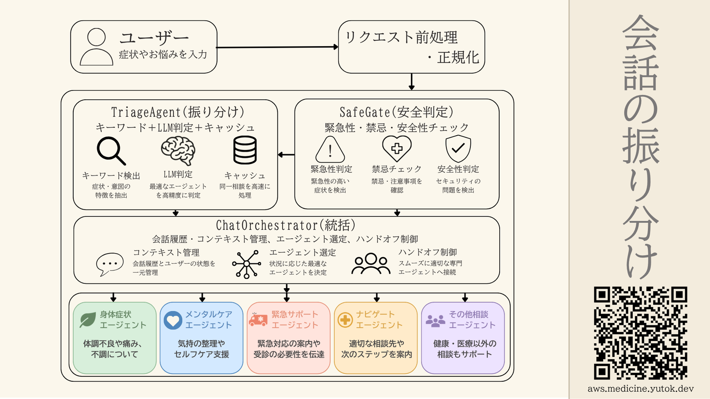
図2. 会話振り分け —
SafetyGateで安全確認 → TriageAgentが5分類（キーワード＋LLM＋キャッシュ）→
Orchestratorが専門エージェントへ。緊急時は119・受診案内で停止（Slide 9ノート）。
図3. AWSステージング構成 —
WebとLINEの二重入口、WAF→ALB→ECS、CloudFront+S3。
PMDA根拠DBをルール参照し、LLMは薬選定に関与しない（Slide 11ノート）。
独自性の一文要約
生成AIは「理解・振り分け・説明・知識検索」に限定し、医薬品の決定はPMDA根拠のルールベースに閉じる。
安全ゲート付きマルチエージェントで緊急相談を推奨フローから排除する。
Slide 11
AWS構成（発表スライド原本）
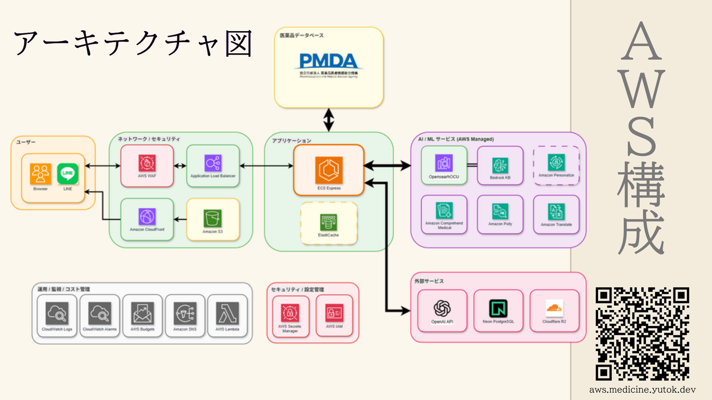
発表用AWS構成図 — WebとLINEの二重入口、PMDA根拠データ、監視・シークレット管理まで一枚
発表で強調するポイント
医薬品データは国の機関（PMDA）公開情報に基づく。候補選定はこのDBをルールベースで参照し、
LLMは医薬品の選定に関与しない。BrowserデモとLINEは同じアプリ・同じロジック。
本番（GCP Cloud Run）とAWSステージングの関係は
docs/ops/AWS_ARCHITECTURE_DIAGRAMS.md に整理されています。
コンテスト応募概要書の本番記載は Cloud Run 側が正です。
Slide 12–18
ビジョンと附記データ
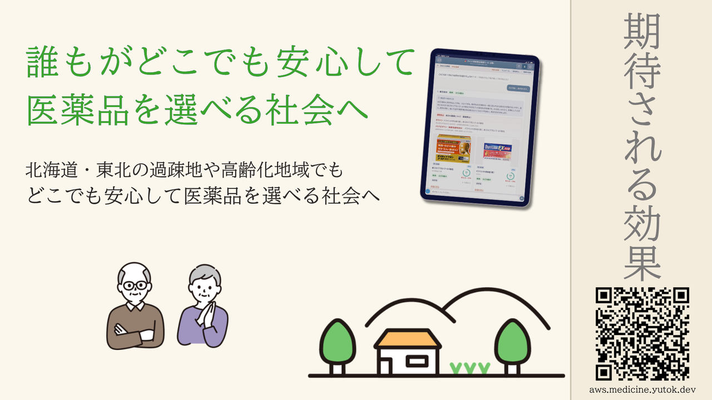
クロージングビジョン
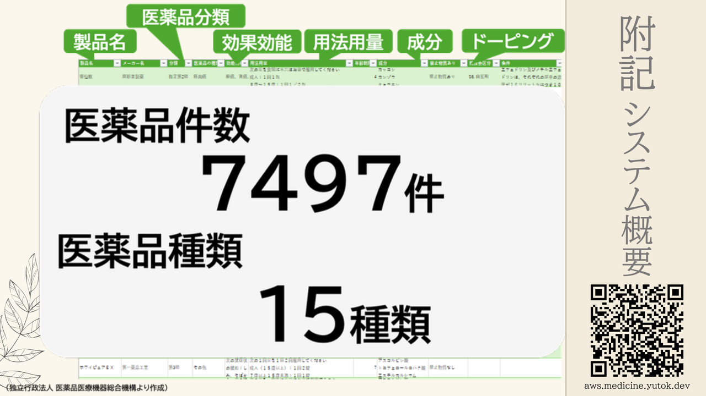
附記 — 収録約7,500件・15種類（PMDAより作成）
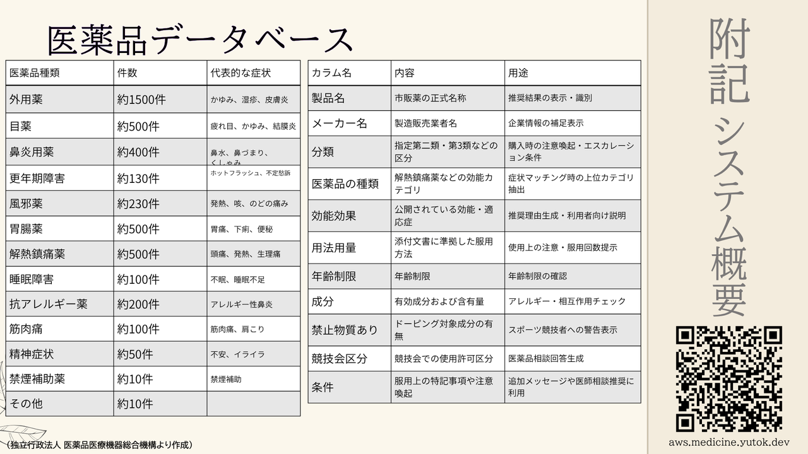
カテゴリ別件数と、推奨・安全判定に使うカラム定義
- 効能効果・用法用量・年齢制限・成分・ドーピング区分などを保持
- 推奨理由生成とアレルギー／相互作用チェックの根拠テーブルになる
- Slide 17–18 は追加附記・補足（発表の質疑応答用）
この発表が言っていること（要約）
- 課題 — 高齢化・人手不足・言語/理解の壁で、薬選びの相談が届かない。
- 解 — スマホのチャットで初期相談を担い、セルフメディケーションを安全に支える。
- 技術の芯 — LLMは理解と説明だけ。薬の決定はルール＋スコアリング。安全ゲートを多段配置。
- 根拠 — PMDA公開データに基づく数千件マスタ。RAGでFAQを補強。
- 入口 — WebとLINE。多言語・音声で高齢者・外国人にも届ける。